This section contains the methodology and scientific material for the Spatial optimizations tool in Ecospace. This routine is implemented using the Spatial optimizations form (Spatial dynamic (Ecospace) > Tools > Spatial optimizations). For instructions for implementing this routine, see Spatial optimizations.
We describe two approaches for spatial optimization of protected area placement, both based on maximizing an objective function that incorporates ecological, social, and economical criteria. Of these, a seed cell selection procedure works by evaluating potential cells for protection one by one, picking the one that maximizes the objective function, add seed cells, and continue to full protection. The other is a Monte Carlo approach, which uses a likelihood sampling procedure based on weighted importance layers of conservation interest (similar to Marxan’s) to evaluate alternative protected area sizing and placement. The two approaches are alternative options in a common spatial optimization module, which uses the time- and spatial dynamic Ecospace model for the evaluations. The optimizations are implemented as components of the Ecopath with Ecosim approach and software. In a case study, we find that there can be protected area zoning that will increase economical and social factors, without causing ecological deterioration. We also find a tradeoff between including cells of special conservation interest and the economical and social interest, and while this does not need to be a general feature, it emphasizes the need to use modeling techniques to evaluate the tradeoff.
The most widely used approach for spatial planning with a conservation perspective is the Marxan approach and software, (http://www.uq.edu.au/marxan/) developed primarily by Hugh Possingham and colleagues at the Ecology Centre, University of Queensland. Marxan is a very flexible approach capable of incorporating large data sources and use categories, it is computationally efficient, and lends itself well to enabling stakeholder involvement in the site selection process.
We view the new importance layer sampling procedure as complimentary to the Marxan approach in that its strong side, through the underlying trophic modeling background is in evaluating ecological processes, including spatial connectivity; topics that are not well covered in Marxan analysis. In doing so, we, however, involve a rather complicated dynamic model, even if user-friendly, and this unavoidably has a cost. We therefore advocate that the two approaches, with their given advantages and limitations, be applied in conjunction – using two sources to throw light at a problem from different angles, beats one, any time. We have in order to facilitate such comparative studies developed a two-way bridge between Marxan and EwE, enabling exchange of spatial information and of optimization results between the two approaches. We describe only briefly aspects of this below, as we have applied the bridge elsewhere for a formal comparison (Ferdaña et al., MS).
We employ an objective function for the optimizations, which corresponds to the objective function used in the policy optimization module of EwE. This module, which has been applied to a number of case studies, (e.g., Christensen and Walters, 2004; Araújo et al., 2008; Arreguin-Sanchez et al., 2008) uses a non-linear search routine to find a combination of effort by fishing fleets that will maximize the objective function. The objective function in turn includes ecological, economical and social indicators, even legal constraints if pertinent, through considering profit, number of jobs, stock rebuilding, and two ecological measures. For the spatial optimizations we add a further indicator in form of a boundary weight factor (See Table 1)
The profit objective is calculated by summing revenue across all fleets, and subtracting the cost for operating. Cost is considered a linear function of effort with a fixed cost added. The following calculation is performed for each time (
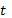
) step to estimate the revenue (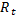
),
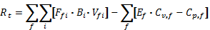
Equation 1
with
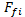
being the fishing mortality for group (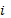
) caused by fleet (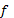
),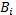
is the biomass of (), and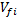
is the ex-vessel value per unit weight of () caught by ().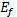
is the relative effort for (), the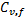
is variable cost per unit effort for (), and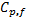
is the fixed cost for fleet ().The calculations in Equation 1 are, as indicated, performed for each time step, with benefit summed over time. We, however, discount future values based on either a traditional discount rate, or an inter-generational discount rate (Sumaila and Walters, 2005), based on user preference.
As a social indicator, we use the number of jobs over time (
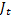
) created in the ecosystem, and we estimate this for each time step () from the landed value of the exploited group times the relative number of jobs per unit value (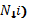
, or
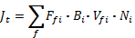
Similar to the profit objective, we discount the number of jobs over time.
We estimate the mandated rebuilding objective (
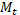
) for each time step () from
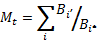
where
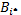
is baseline Ecopath biomass for group (), and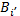
equals the group biomass if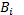
is lower than the mandated biomass,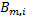
for the group, and if it is not.The mandated rebuilding objective can be used to set ‘minimum biological acceptable levels’ (or MBAL as commonly used). By setting high mandated biomasses () for a group it can also be used to capture ‘existence values,’ e.g., of marine mammals of interest for a whale watching industry. We do not discount the mandated rebuilding structure over time.
The ecosystem structure objective is meant to capture that mature (K-type) ecosystems tend to be dominated by long-lived species and individuals (Odum, 1969). We seek to capture this characteristic through the inverse production/biomass ratio, estimating for each time step ()
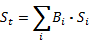
where
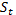
is the overall ecosystem structure measure, and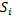
the ecosystem structure factor for (). We provide default values for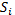
in form of the inverse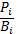
ratios (unit year), supplied as part of the basic parameterization of the Ecopath model. To avoid unduly influence by very short-lived species we have (arbitrarily) set to 0 for groups with an average lifespan of less than a year, (i.e. groups whose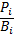
is less than 1 year-1).The ecosystem structure objective is not discounted over time; having long-lived species in the future being deemed as important as having them now.
As a measure of biomass diversity, we used a modified version of Kempton’s Q75 index, originally was developed to describe species diversity (Kempton, 2002). We here used a biomass diversity indicator following Ainsworth and Pitcher (2006), albeit slightly modified. We estimate the biomass diversity index (
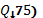
from

here
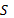
is the number of functional groups, and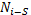
is the biomass of the (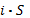
)th most common group, using a weighted average of the two closest group if () is not an integer. The biomass diversity index describes the slope of a cumulative group abundance curve. As a sample with high diversity (evenness) will have a low slope, we reverse the index and express it relative to index value from the Ecopath base run (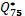
)
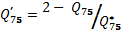
We truncate the index in the extreme and unlikely case that
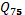
would more than double from the base run. We only include higher trophic level groups (TL>3) in the calculation of the biomass diversity index – should this, for models with only few functional groups, lead to less than 10 groups being included in the calculations, we, however, base the calculations on all living groups. As for the other ecological indicators we do not discount future index values.The final element in the objective function represents spatial connectivity, expressed through the boundary weight factor,
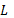
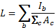
where the total protected area size (
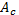
, km2) is summed over spatial cells (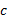
), and the boundary length is estimated by summing over all protected cell (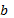
) the side lengths (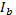
, km) that do not border another protected cell or land.With the elements of the objective function being defined, we can now obtain the overall objective function measure (
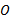
) from
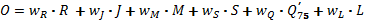
Equation 2
Where each of the objective weighting factors, (
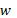
), can assume any value, including zero, which is used for measures that are ignored in a given optimization. We use the objective function measure for both of the optimization methods described below.This optimization method is based on a previous study (Beattie 2001; Beattie et al. 2002), in which we use a very simple optimization scheme to evaluate tradeoff between proportion of area protected and the ecosystem-level objective function. We have modified the previous approach by securing a better program flow, and notably by changing the objective function from considering only profit from fishing and existence value of biomass groups to the more detailed function described above (Equation 2).
The procedure takes as its starting point the designation of one, more, or all spatial cells as ‘seed cells’, i.e. cells that are to be considered as potential protected cells in the next program iteration. The procedure will then run the Ecospace model repeatedly between two time steps, closing one of the seeds cells in each run, while storing the ecosystem objective function value. The seed cell that results in the highest objective function is then closed for fishing, and its four neighboring cells (above, below, and to either side) are then turned into seed cells, unless they are so already, or already are protected, or are land cells. This procedure will continue until all cells are protected.
The time over which the selection procedure is run is chosen dependent on the application. Typically, an ecosystem model is initially developed and tuned using time series data to cover a certain time period, e.g., from 1950 to 2005. Subsequently, the model is used in a scenario development mode to evaluate for instance protected area placement covering the period 2006-2020.
The major result from the seed cell selection procedure is an evaluation of the tradeoff between size of protected area, and each of the objectives in Equation 2. This can, for instance, be used to consider what proportion of the total area to close in subsequent, more detailed analysis based on importance layer sampling.
An advantage of the seed cell modeling approach described above is that it allows a comprehensive overview of the tradeoff between proportion of area closed to fishing, and the ecological, social, and economical benefit and costs of the closures. This is done, based on the information already included in the EwE modeling approach, with no new information being needed. While this may be an advantage from one perspective, it does not allow use of other form for information, notably in form of spatial information, such as, for instance, critical fish habitat layers from GIS.
To address this shortcoming, we have developed an alternative optimization routine for the Ecospace model, which uses spatial layers of conservation interest (‘importance layers’) to set likelihoods for spatial cells being considered for protection. The optimizations are performed using a Monte Carlo approach where the importance layers are used for the initial cell selection in each MC realization. The Ecospace model is then run, the objective function (Equation 2) is evaluated, and the results, including which cells were protected, are stored for each run (see Figure 1).
The importance layers are defined as raster layers, with dimensions similar to the base map layers in the underlying Ecospace model, i.e. they are rectangular cells in a grid with a certain number of rows and columns. Each cell in a given layer has a certain ‘importance’ for conservation, expressed, e.g., as the probability of occurrence for an endangered species. For each importance layer ( ), we initially scale the importance layer values to sum to unity, and then calculate an overall cell weighting (
), we initially scale the importance layer values to sum to unity, and then calculate an overall cell weighting ( ) for each cell () from
) for each cell () from
 Equation 3
Equation 3
where  are the importance layer weightings, and
are the importance layer weightings, and  the cell-specific, scaled importance layer values.
the cell-specific, scaled importance layer values.
In order to evaluate how well the importance layers are represented in each optimization run, we estimate
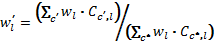
Equation 4Where  indicates cells selected in a given run, and
indicates cells selected in a given run, and  the cell with the highest weightings for the given layer. The layer-specific indicator (
the cell with the highest weightings for the given layer. The layer-specific indicator ( ) can obtain values in the range between 0 and 1.
) can obtain values in the range between 0 and 1.
For each optimization search, one has to select the proportion of water cells to protect in the runs, as well as how many times to repeat the Monte Carlo runs. It is possible to set the search routine up to iterate over a range of protection levels, e.g., from 10% to 100% protected in steps of 10%.
Similar to the seed cell selection procedure, we typically develop and tune the model to an initial time period, and then use the sampling procedure to evaluate scenarios for protected areas for a subsequent time period.
We have developed a capability for Ecospace to read raster files with spatial information such as importance layers or other Ecospace base map layers. The reading is possible from comma separated text files (.csv), ESRI ASCII files (.asc), and ESRI shape files (.shp). The files need to have layers or columns with row and column numbers matching the Ecospace model. This capability is designed to allow straightforward exchange between the Ecospace modeling and Marxan analysis, with the constraint that it needs to be possible to represent the layers in raster form. The reading of the spatial files is described in more detail in Spatial optimization and Setting importance layers.
The methodologies for spatial optimization described here rely on the Ecospace model, implemented within the Ecopath with Ecosim approach and software. The Ecospace model is described in a number of publications, notably by Walters et al. (1999; submitted). The Ecospace models builds on an underlying Ecopath trophic models, which can have any number of functional groups or age- and species-specific groups as appropriate for the questions to be addressed. The Ecospace runs picks up levels of fishing effort over time from an associated Ecosim runs, including mediation factors and most other factors that do not have a potentially important spatial dimension, which Ecosim cannot address.
Ecospace, in essence, employs the time-dynamic Ecosim model in each cell in a raster grid, while accounting for cell connectivity and fish movements explicitly. Fishing effort is distributed over space according to a gravity model, optimizing the gain obtained from fishing. Fish migration and advection can be modeled explicitly, and the base map can be populated from spatial layers.
The spatial model, Ecospace, can work with any number of protected cell types. For each of these, fishing may be banned for one or all fleets, and for all or part of the year. While Ecospace can handle multiple types of protected cells, it needs to be specified for the optimization routines, which type of protected cells they are to work with; we can only consider one type within a given optimization run.
Table 1. objective function employed for spatial optimization. Each objective is given a weighting factor, and the optimization seeks to optimize the summed, weighted objectives.
|
Objective |
Description |
|
Profit |
Estimated by ‘fleet’, and summed over all such |
|
Jobs |
Estimated from value of fisheries, and relative number of jobs/value |
|
Mandated rebuilding |
A minimum acceptable level, by group |
|
Ecosystem structure |
Default values based on biomass/productivity ratios expressing average longevity, weighted by group |
|
Biomass diversity |
Biomass evenness among groups |
|
Boundary weight |
Estimated as total boundary length over the protected area size. Captures spatial connectivity |
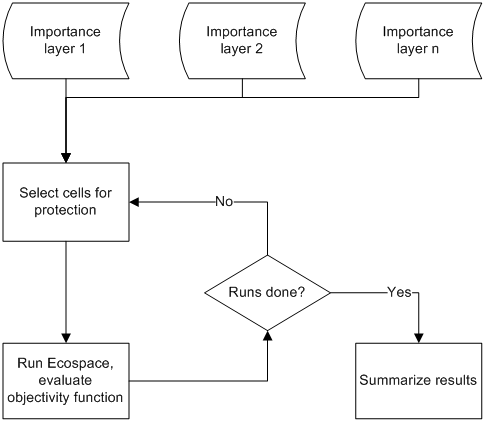
Figure 1. Logic of the importance layer sampling procedure. For each run a given percentage of all cells are protected based on weighted likelihood in importance layers. The evaluation of each run is done independently based on a defined objective function..